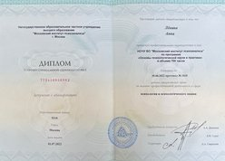

Сайт для тех, кто дошёл до середины жизни и оказался в тупике
Здравствуйте, меня зовут Анна Лёвина, я психолог.
Работаю онлайн по всему миру и офлайн в г. Алматы.
Образование:
- 2023-2025 – Университет Туран, магистратура по клинической психологии
- 2021-2022 – Московский институт психоанализа, проф. переподготовка по основам психологической науки и практики
- 2018-2020 – Обучающая терапия по психодинамическим направлениям (Фрейд, Юнг, символдрама) у психолога-наставника
- 2015-2016 – Сертификационный курс Мастер-Практик нейролингвистического программирования (META International Inc.)
- 2015 - Сертификационный курс НЛП-практик
Интересуюсь современной наукой, философией, политикой, экономикой, мистицизмом (не путать с магией и эзотерикой). Писала диссертацию на тему экзистенциальных кризисов и их связи с мистическим/духовным опытом человека. Люблю читать первоисточники, обучаюсь, в том числе, по ним.
Прохожу личную терапию и супервизии.
Опыт работы – 6 лет.
